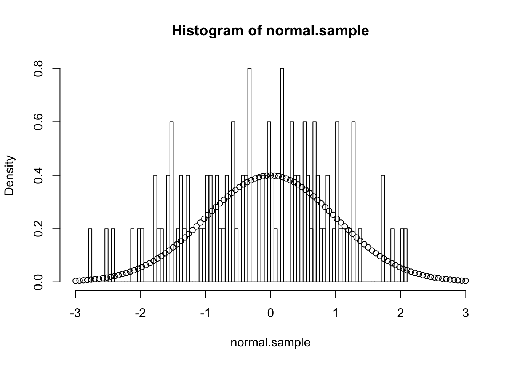
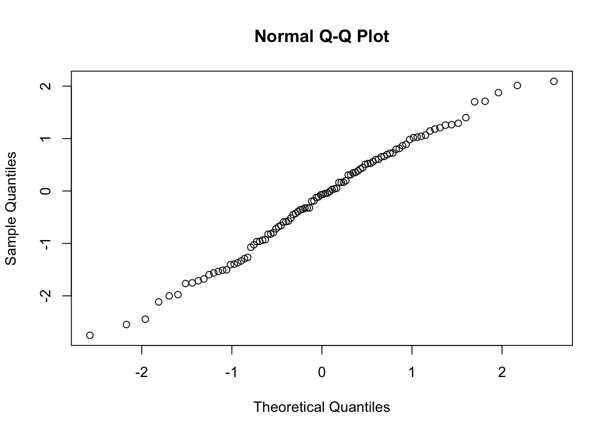
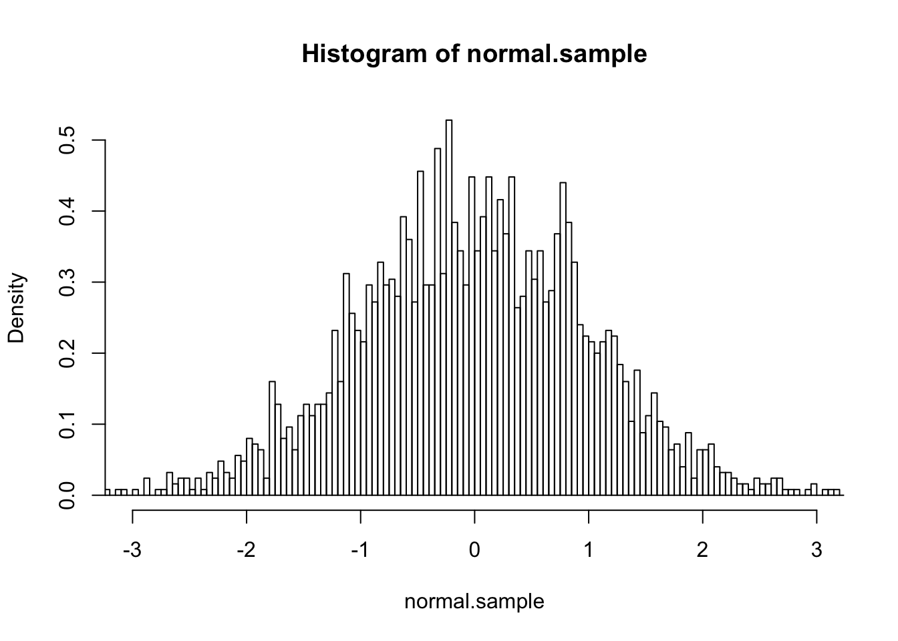
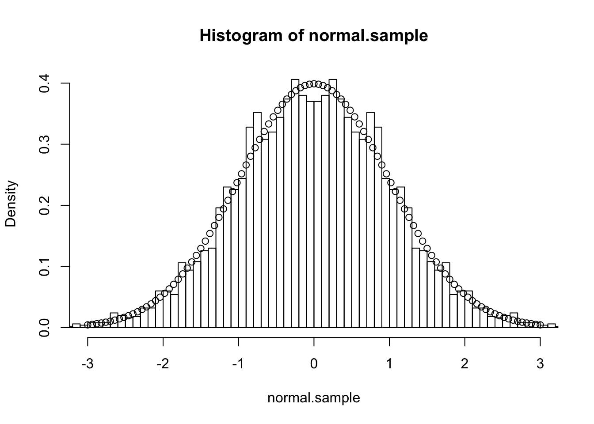

R Markdown
In this first blog post, I’d like to render some R Markdown code, see how this works and catch up with all the things I always wanted to do.
Posts will be small and comprehensible, i.e. with R code and examples. Now and then, I may develop a more complicated model/example that are related to insurance and statistics.
So let’s start this journey with something easy, like plotting the distribution of a normal distribution.
normal.sample<-rnorm(100,0,1)Now that we have the sample, we can plot the histogram of the sample :
hist(normal.sample,
xlim=c(-3,3),
breaks=100,
probability = T)
points(seq(-3,3,by=(3-(-3))/100),
dnorm(seq(-3,3,by=(3-(-3))/100),0,1))
qqnorm(normal.sample)
shapiro.test(normal.sample)##
## Shapiro-Wilk normality test
##
## data: normal.sample
## W = 0.98723, p-value = 0.4532var(normal.sample)## [1] 1.194904mean(normal.sample)## [1] -0.1619367It seems like 100 simulations are not enough, so why don’t we try with 10000 :
normal.sample<-rnorm(10000,0,1)
hist(normal.sample,
xlim=c(-3,3),
breaks=100,
probability = T)
points(seq(-3,3,by=(3-(-3))/100),
dnorm(seq(-3,3,by=(3-(-3))/100),0,1))
v<-var(normal.sample)
v## [1] 1.012188m<-mean(normal.sample)
m## [1] -0.004863322We see that the variance is differs around 1.219% higher. As for the mean, we can see that it is -0.005.
Now, here’s a trick : the normal distribution is a symetric distribution, so if we took n simulations and add multiply these simulations by -1, we should get better results for these two moments.
normal.sample<-rnorm(2500,0,1)
hist(normal.sample,
xlim=c(-3,3),
breaks=100,
probability = T)
var(normal.sample)## [1] 1.016453normal.sample<-c(normal.sample,-normal.sample)
hist(normal.sample,
xlim=c(-3,3),
breaks=100,
probability = T)
points(seq(-3,3,by=(3-(-3))/100),
dnorm(seq(-3,3,by=(3-(-3))/100),0,1))
v<-var(normal.sample)
v## [1] 1.016287mean(normal.sample)## [1] 0Well, normaly the mean should be equal to 0. Let’s recall how the mean is computed :
\[\bar{X} = \frac{1}{N} \sum_{i=1}^N X_i\]
As we took normal.sample and it’s negative version (*-1), the sum shoud be 0 because \(X_i=-X_{2500+i}\).
normal.sample<-round(normal.sample,digits=2)
mean(normal.sample)## [1] -1.387779e-21var(normal.sample)## [1] 1.016047Ok, still doesn’t work :p the mean is not equal to 0, but very close!
Guanhua